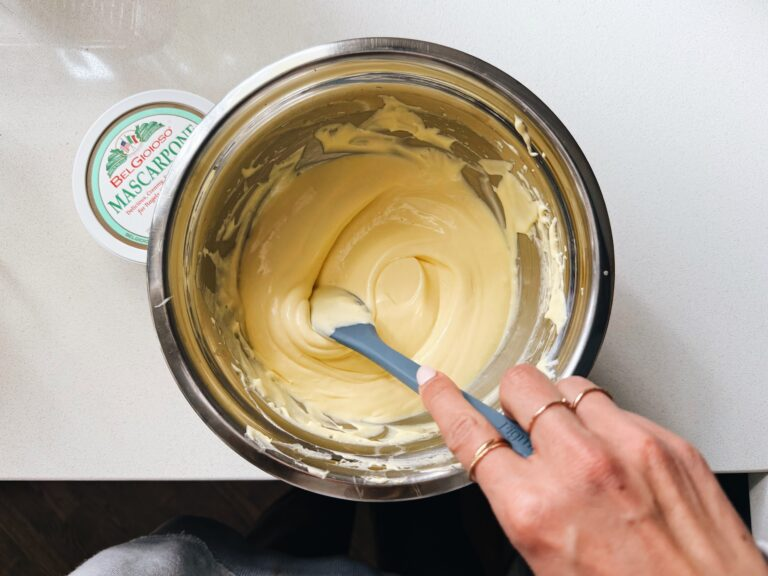

Dulce De Leche Tiramisu
Creamy dulce de leche layered with espresso-soaked ladyfingers in one delightful
slice! This Dulce De Leche Tiramisu is my new favorite dessert.
This Is My New Favorite Dessert.
There’s nothing that currently tops it. It’s the creamy dulce de leche layer + the espresso-soaked
ladyfingers all hugging each other in one creamy, delightful slice. It has my whole heart.
My all-time favorite desserts list:
chocolate chip cookies
peach cobbler
the chocolate patticake from Yum! Bakery
and now, this tiramisu.
In the last two years, I’ve bought an embarrassing number of little individual tiramisu cups from our
local “fancy” grocery store (shoutout to Kowalski’s). They have a specific variety in their bakery case
that is called Dulce De Leche Tiramisu, and it is my all-time favorite.
So, basically what I did is I made it myself. Here’s a picture of me side-by-side testing it…
And determining that THIS HOMEMADE TIRAMISU IS EVEN BETTER! *wipes a tear*
I made this recipe in classic whole-pan form, which works so beautifully for an ooh-ahh show-stopping
dessert at a dinner party or a holiday meal. I fully plan to make this for Christmas dessert every
year from here on out.
And here’s the kicker: it’s shockingly easy to make, and actually needs
to be made ahead! THE CONVENIENCE!
Since this version doesn’t include alcohol, the key to next-level
success is using truly rich, dark espresso for soaking the ladyfingers. Technically you can use any strong
coffee, or homemade espresso from a powder. But if you want to really knock your own socks off, go to
Starbucks and order 5-6 espresso shots (decaf, in my case) to use for soaking. Or use an espresso maker
if you have one at home.
You will die of joy. The richness! The depth! Contrasted with
that sweet, creamy layer that tastes just subtly of dulce de leche – it’s SO incredible.
How To Make This Recipe
Mix Up Bowl 1!
Egg yolks and sugar, then mascarpone cheese.
Mix Up Bowl 2.
The heavy whipping cream and dulce de leche! I use a can of dulce de leche
(not the whole thing – just a dollop).

Combine Bowl 1 and Bowl 2.
This is where it becomes MAGICAL. The fluffy, heavy-but-light, silky consistency
of this is unreal.
Soak Ladyfingers and Layer.
Use strong espresso! Use strong espresso! Use strong espresso! We want a layer
of ladyfingers, then cream, then ladyfingers, then cream.
Finish!
I’d recommend popping this in the fridge for a minimum of 4 hours, but ideally
more like 12-24 hours for the best consistency to serve. It’ll set and get easier to
cut and serve in clean slices as it chills in the fridge – plus, those ladyfingers will
absorb some moisture and the whole thing is just so divine.